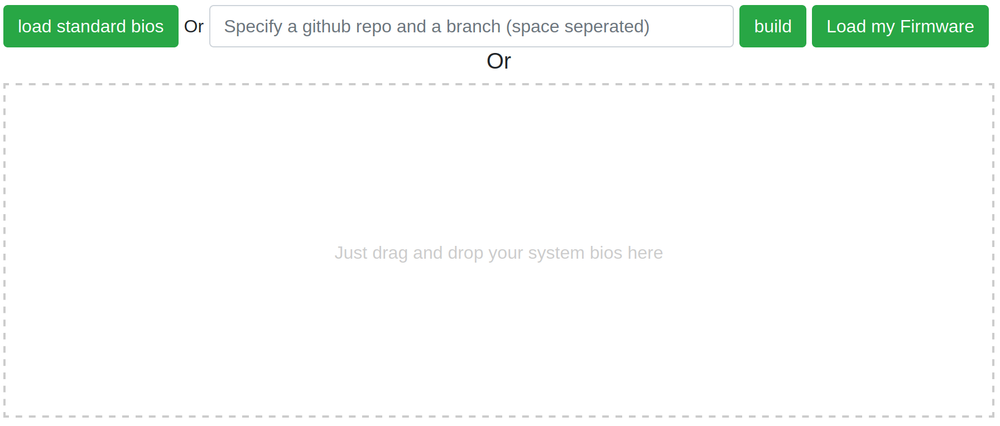
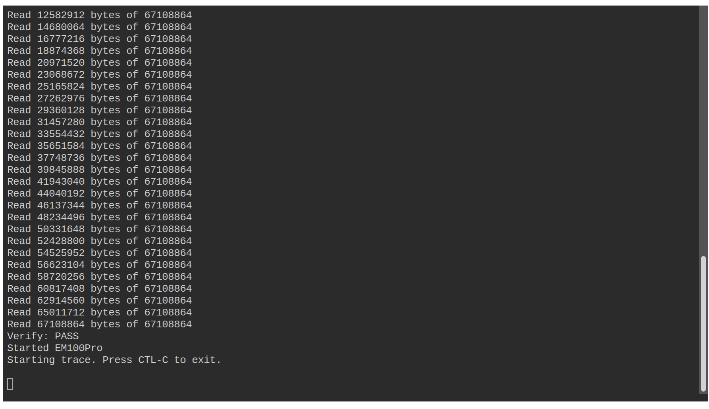

OpenBMC
Provides the ability to dynamically load a standard or custom prebuilt OpenBMC FW payload via drag and drop

LinuxBoot
Provides the ability to dynamically load the standard HPE BIOS, build and load directly from a github repo and branch or drag or drop a prebuilt FW payload
Boot Process
Emulator FW load is complete
Connect power to host (add correct image)
Launch OpenBMC web session (add correct image)
Disconnect power from host once session is complete (add correct image).